" Nadie me ha tocado ".
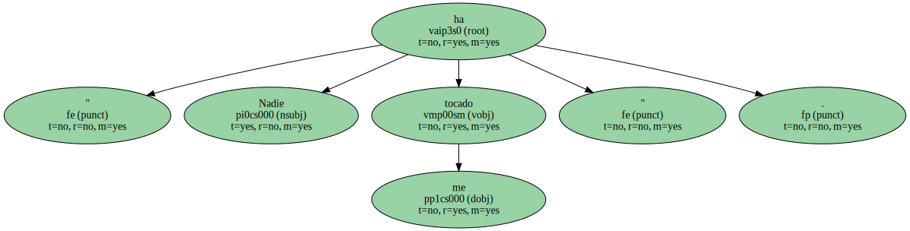Como si ser tocado , recibir una paliza , una pedrada , un golpe o un disparo fuera algo que se puede esperar.
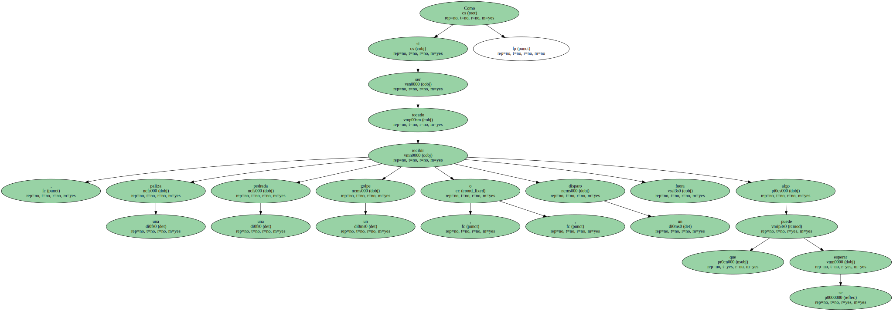Las palabras de Sammy Alí , un joven yemení que vive en Nueva York , demuestran que , tras el 11 de septiembre , las cosas han cambiado para los árabes en EEUU.
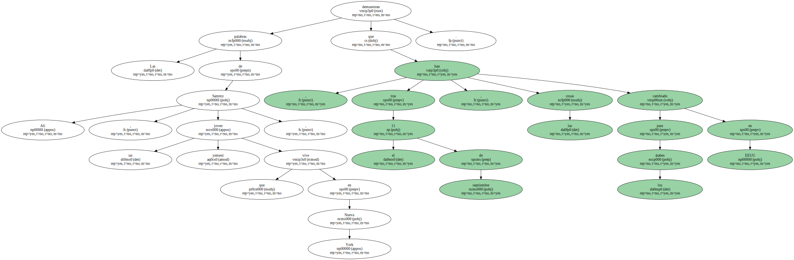El censo del 2000 revela que en el país hay un millón de personas árabes o descendientes de árabes y 10 millones de asiáticos.
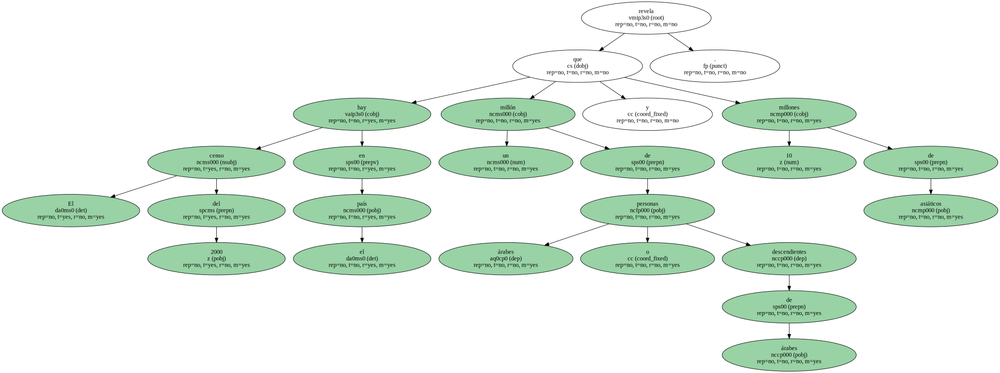Según una encuesta , el 48% de los ciudadanos los considera " personalmente más sospechosos ".

Según otro sondeo de CNN , USA Today y Gallup , el 58% de los estadounidenses quiere que se les someta a más controles , el 49% pide para ellos carnets de identificación especiales y el 32% apuesta por que se les coloque bajo vigilancia especial.
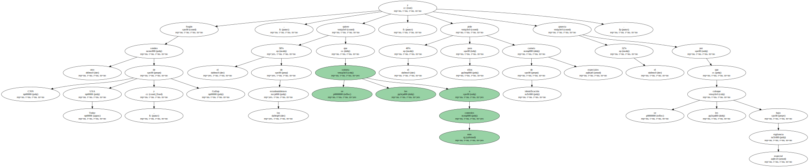La amenaza de un recorte de las libertades parece dar menos miedo que una piel oscura o un turbante.
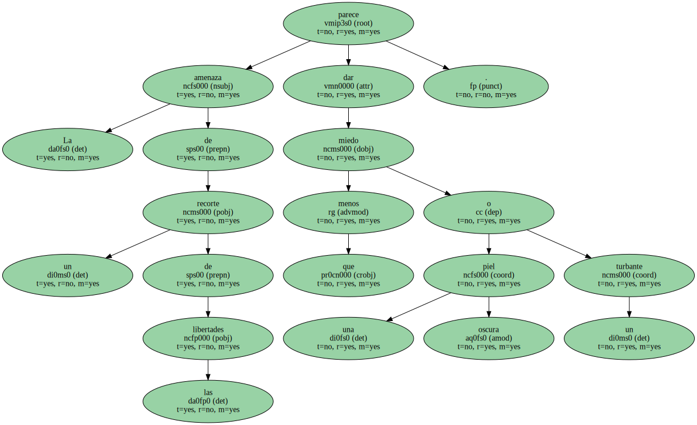La tinta mancha con titulares que hacen recordar épocas negras y supuestamente superadas del país.
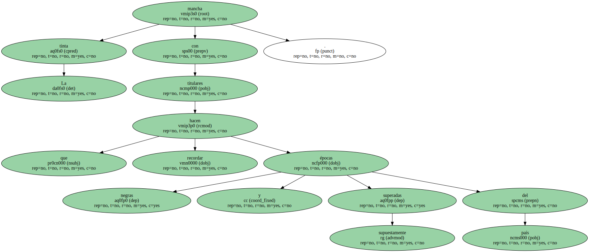Asesinado un sij en Arizona , asesinado un pakistaní en Dallas , 300 personas intentan atacar una mezquita en Chicago , una mujer y su hijo , apedreados en Wyoming , un hombre intenta atropellar a una mujer paquistaní , hallado un paquete sospechoso con citas de Bin Laden y una oreja de cerdo en la misión de Afganistán en Nueva York ... y más.
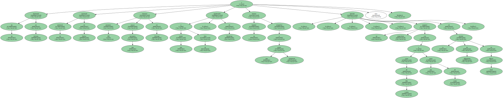Hirió también a la comunidad árabe.
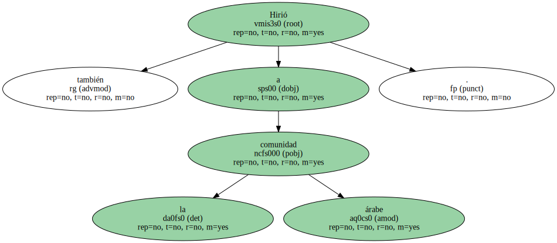En 1941 , tras el ataque de Pearl Harbor , Franklin Delano Roosevelt confinó a más de 100.000 japoneses en campos de concentración.
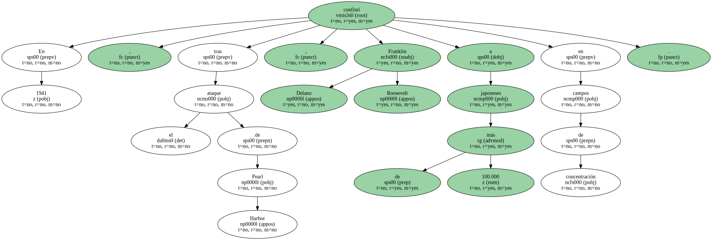Hoy , las amenazas y las miradas desconfiadas y despectivas funcionan como una infranqueable valla de alambre.
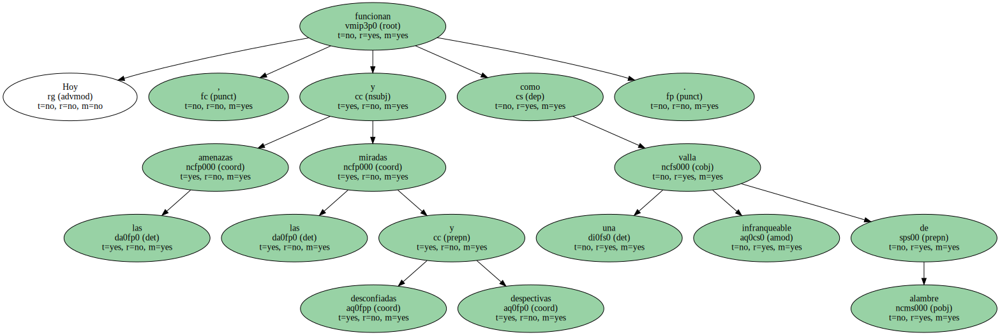César , un dominicano que da clases en Queens , vio durante la primera semana que siguió al ataque una quincena de pupitres vacíos , los de sus alumnos árabes.
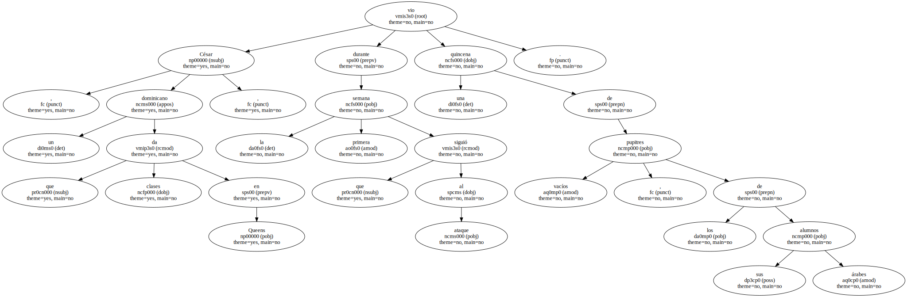En las universidades , el Comité Antidiscriminación Americano-Arabe registró más de 250 incidentes violentos.
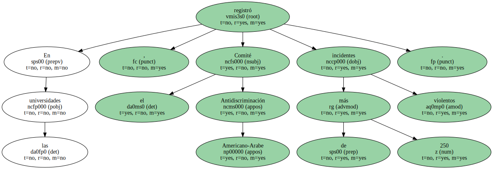En Nueva York , los taxistas árabes o de aspecto árabe han recibido un mensaje de apoyo de la compañía.
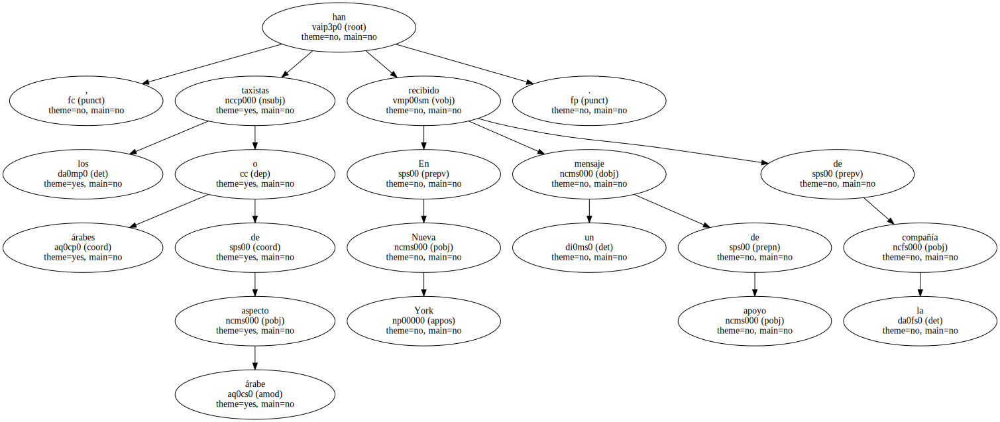Sus bolsillos empiezan a notar el miedo y la desconfianza de los pasajeros.
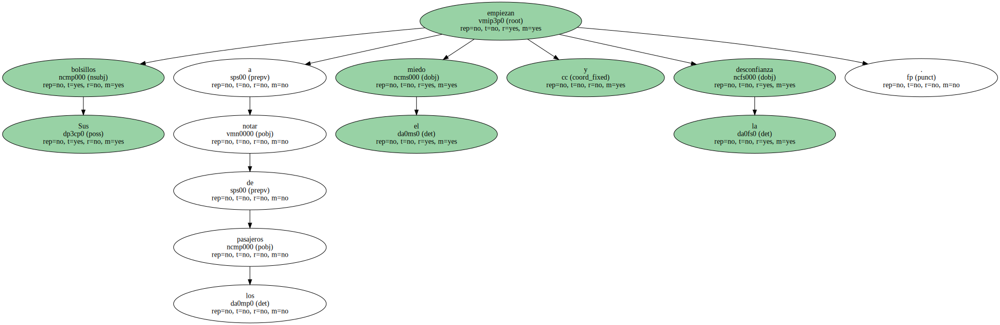En sus oídos , las amenazas que se colaban como interferencia en sus radios el 11 de septiembre : " Atrevéos a salir . Ya podéis rezar a Alá . Os vamos a matar ".
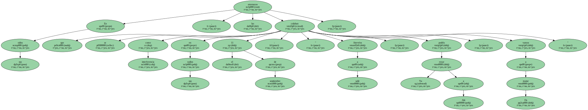Los problemas raciales se dan , sobre todo , en zonas donde la comunidad árabe se ha instalado hace menos tiempo.
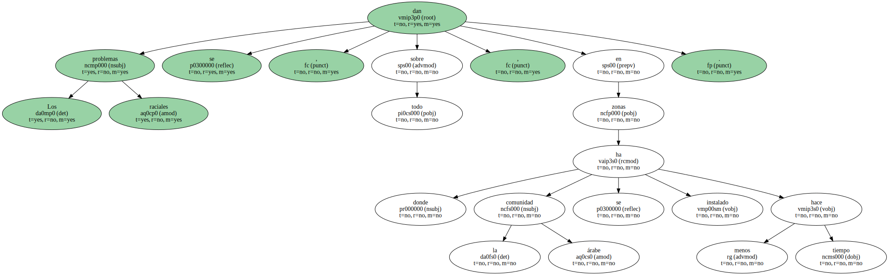" Es por la ignorancia de la gente " , afirma un agente que patrulla en la Atlantic Avenue de Brooklyn , arteria principal de una de las comunidades árabes más importantes de Nueva York.
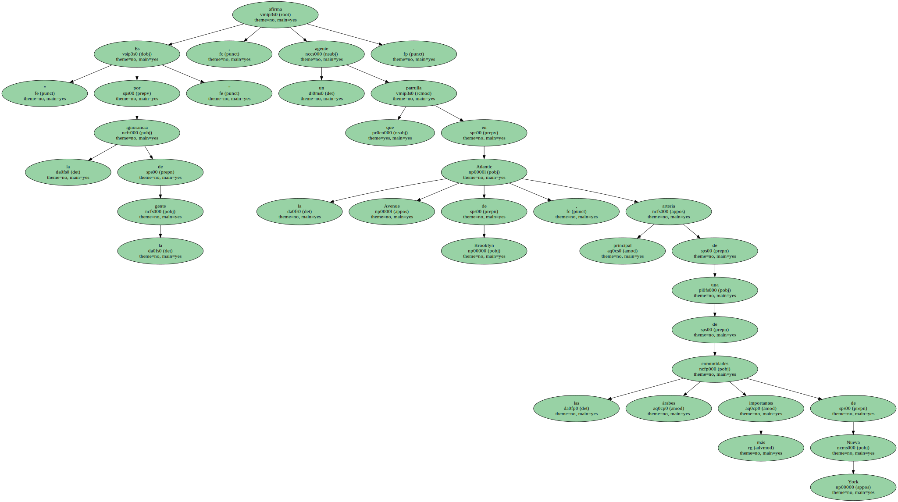" Aquí la gente ha ido junta a la escuela y sus niños han nacido a la vez . La tensión es mucho menor que en zonas como Queens o el Bronx . Se ve comprensión , solidaridad y apoyo ".
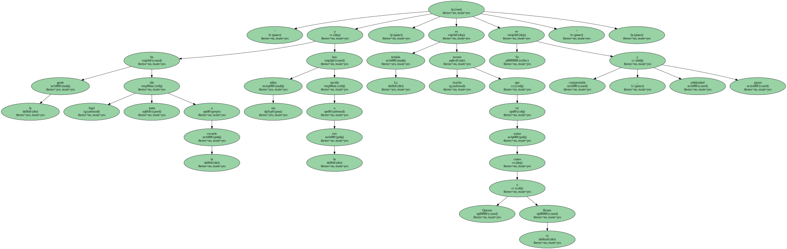Los restaurantes , sin embargo , tienen pocos clientes.
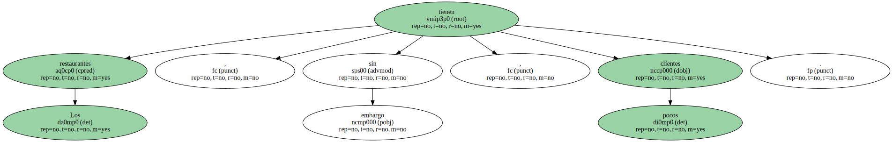Como el aspecto , la religión islámica ha sido demonizada por algunos.
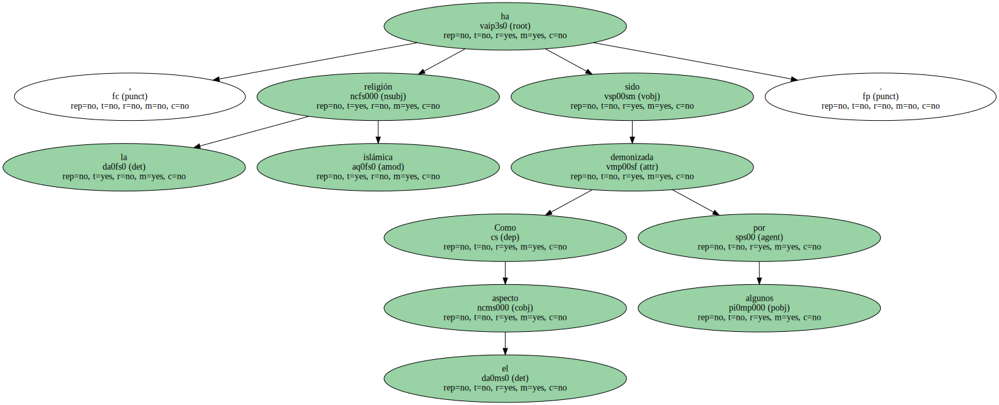Pese a acciones como la del presidente George Bush , que lanzó una llamada a la tolerancia y el respeto desde una mezquita de Washington , pese a los discursos de los líderes políticos y religiosos explicando que el amor y la paz son la base del islam , pese a las intervenciones pacíficas de famosos musulmanes como Mohamed Alí o el cantante Cat Stevens - - Yusuf Islam - - , el retroceso es innegable.
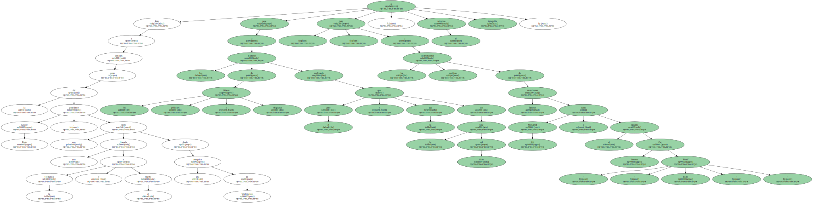" Los musulmanes en América son ahora la imagen del crimen " confiesa un apesadumbrado Hakim Olajuwon , una de las estrellas de la NBA.
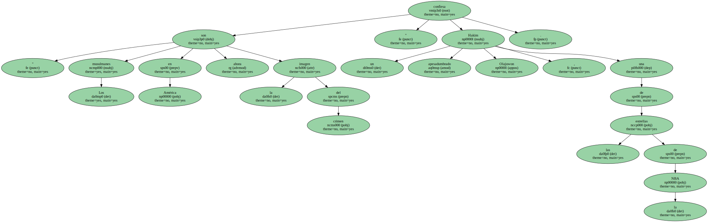" Lo que ha sucedido nos pone en una posición muy mala , retrocediendo casi al principio . Tenemos que explicar a un país donde somos una minoría que las acciones de unos pocos no pueden identificar a la mayoría ".
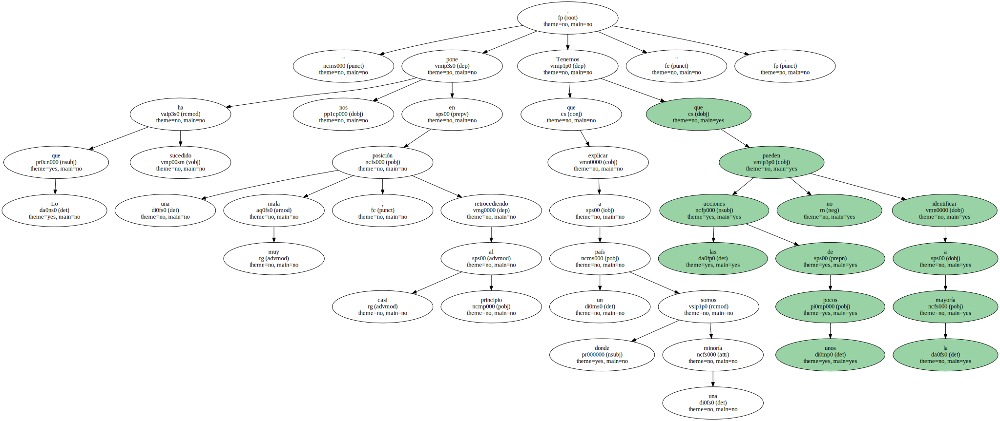Olajuwon recuerda que había musulmanes entre las víctimas del World Trade Center.
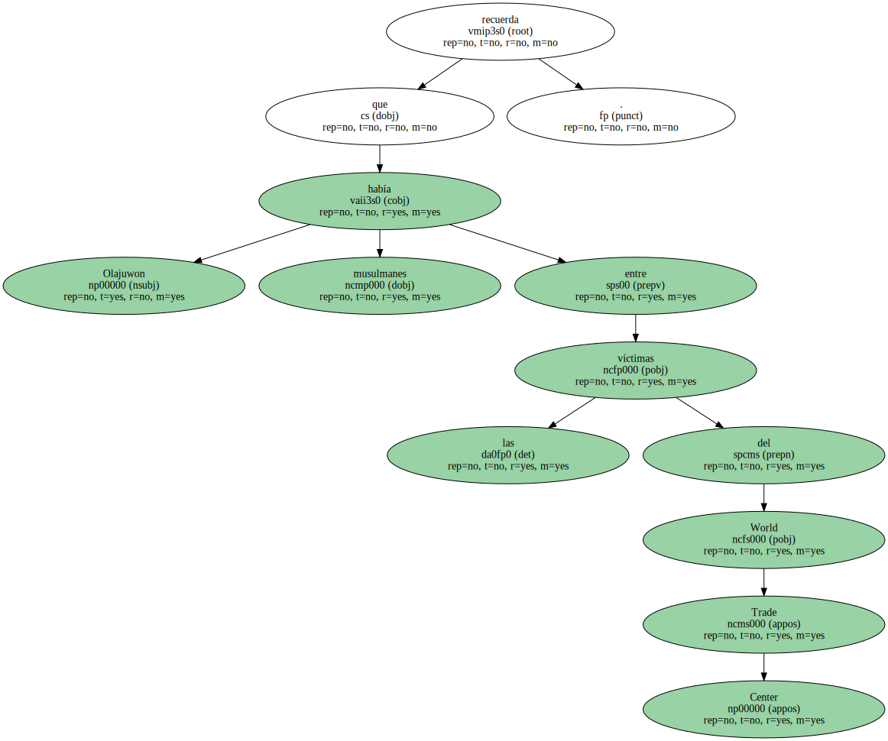Unos eran empleados.
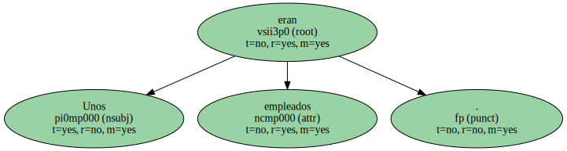Otros , bomberos.
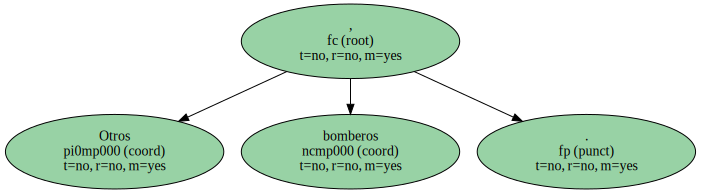En un restaurante con comida de Oriente Próximo de Atlantic Avenue , los camareros ocupan una mesa del vacío local , en el que junto a los cuadros de jaimas y camellos lucen las barras y estrellas.
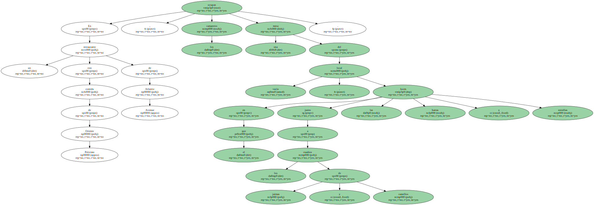" Yo soy americano y esto me ha dolido tanto como a ellos " , asegura un sirio que ha recibido amenazas de muerte a las que ha respondido con un discurso sobre lo fácil e inútil que es matar.
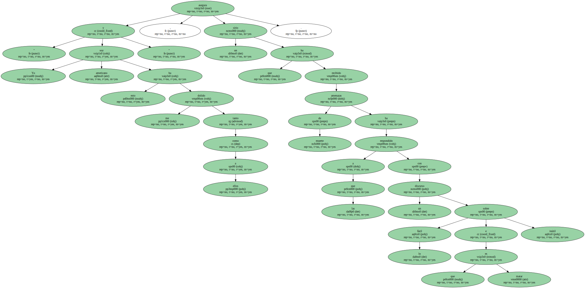No tiene miedo ?.
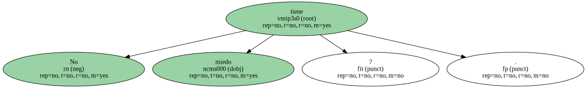" Yo sólo temo a Dios ".
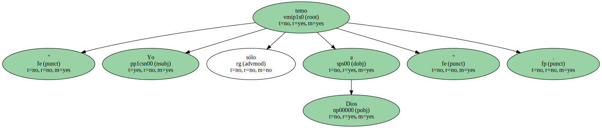